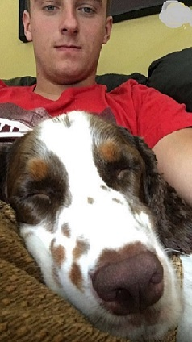
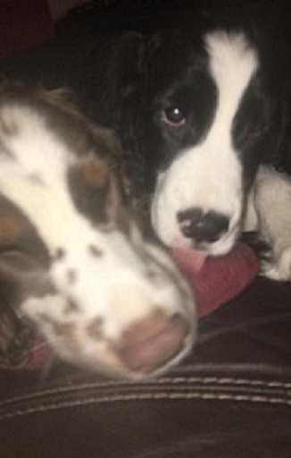

Tucker | ||
| links: | ||
|
Home page Remy Cheerio |

 Tucker is a tri-colored pure bread springer spaniel. He is on the left in the second photo. His best friend is the tennis ball. One cannot say anything that ends in "all" if they are just trying to relax. Tucker will run up to them with the tennis ball in his mouth waiting for you to play with him. He is older than Remy (the other dog in the second photo) by a couple years. He was an only dog for a while, and adjusted to the puppy very well. However, sometimes he still gets jealous from all the attention Remy gets. |
|
| UMaine undergrad Student | ||